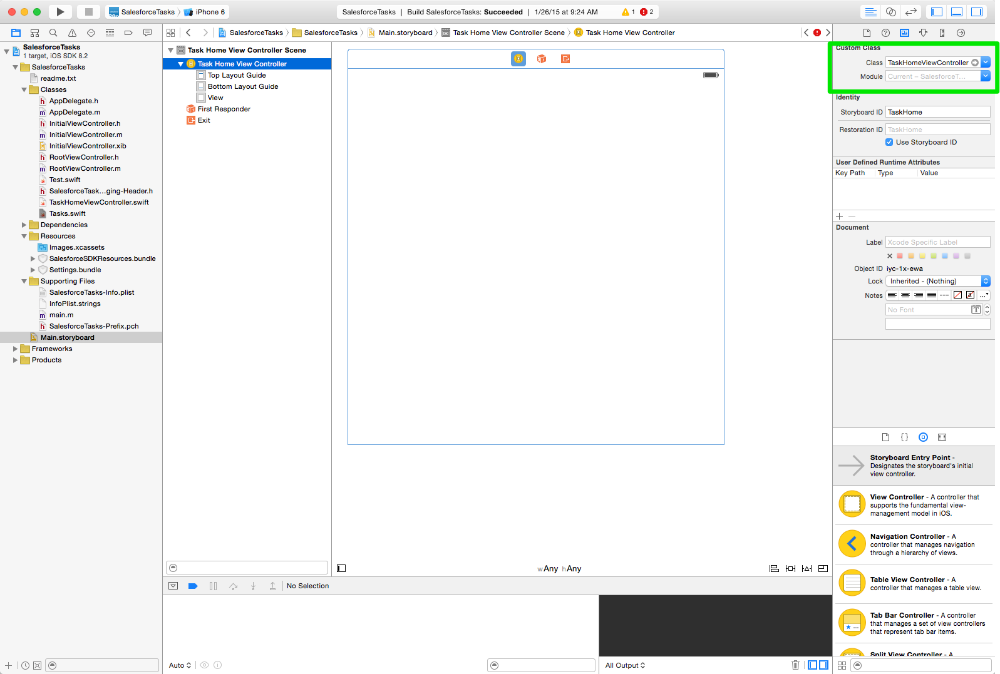
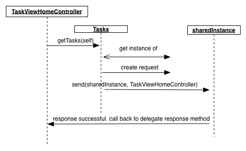

Querying Salesforce Data
TweetIn the previous tutorials we prototyped our app, added a little design, and got our mobile sdk base app ready to go. Now it's time to start working with Salesforce data.
SalesforceSDKManager
When we created our base app, we inherited a number of objects that are important to using the Salesforce APIs. Probably the most important is a shared instance of SalesforceSDKManager. This instance gets created on your behalf as part of the authentication process. Technically speaking SalesforceSDKManager is a singleton - it is only created once in your app lifecycle and shared whenever you need to use it. We're going to be dipping our toe into some Object Oriented theory throughout this tutorial. Don't worry, everything we cover we will put into practice straight away.
If we look at the AppDelegate.m file that gets executed when our app starts, you can see the SalesforceSDKManager gets initialized with authentication details and access scope amongst other things. This is also where you can set a specific API version that you want to connect to Salesforce via. That's one of the great things about the Salesforce1 Platform - support for individual API versions to ensure your apps don't break when we upgrade our services.
[SalesforceSDKManager sharedManager].connectedAppId = RemoteAccessConsumerKey;
[SalesforceSDKManager sharedManager].connectedAppCallbackUri = OAuthRedirectURI;
[SalesforceSDKManager sharedManager].authScopes = @[ @"web", @"api" ];
Most of the time you won't have much need to work directly with setting variables on this class, but from a day to day developer perspective, the SalesforceSDKManager gives you a reference to the methods you will use the most when working with the Salesforce API: data queries, updates, and user information.
A Little OO Primer
In Object Orientated (OO) terms SalesforceSDKManager is a singleton class. It contains logic related to basic functions of working with the Salesforce API. We could go into a long discussion about classes and inheritance, but for now, classes help us with maintenance of our code. Common functions can be encapsulated within a class, and the details hidden from other parts of our app.
The app we are going to build is about handling Tasks. We are going to be doing a lot of things with them: fetching a list of tasks from Salesforce, updating them, displaying on the screen and so on. We can keep our code clean by combining common logic such as reading and writing data into a class that other parts of our app can call. Not only does it keep our code clean, but it also makes it much easier to reuse this logic. It is totally forseeable that tasks may be updated from a iPhone, a Mac, and maybe even Apple Watch.
Go ahead and create a new Swift file called Tasks by right-clicking on the Classes folder. Then add the following code.
class Tasks: NSObject {
}
This additional code declares the name of our class, Tasks, and tells Swift that it inherits from NSObject. This is a little more OO theory for us. When a class inherits from another class (called a super class) we have access to the functions of that super class Think of how you inherit traits from your parents - your eyes, nose etc. They are common to your lineage.
That's enough theory for now. Let's get back to coding.
Querying data
Now that we have our Tasks object, we are going to create a function to get a list of tasks from Salesforce. Add the following code to your class between the curly braces
{} that mark the start and end of the class definition.
class func getTasks(delegate: SFRestDelegate) {
let sharedInstance = SFRestAPI.sharedInstance()
let request = sharedInstance.requestForQuery("SELECT Id, AccountId, IsClosed, IsArchived, IsHighPriority, Description, Priority, Subject, Status, ActivityDate FROM Task where IsClosed = false ") as SFRestRequest
sharedInstance.send(request, delegate: delegate)
}
Let's break down what is going on here. It's important to get the basics covered.
func getTasks(delegate: SFRestDelegate) {The first line is a function definition, getTasks, that takes a single parameter of type SFRestDelegate, and can be called as a static method. (the class keyword means that I do not need to create an instance of the Tasks object to call the function.) This class is called a protocol in Swift. It defines a series of functions that must be included in class to handle responses from salesforce. By specifying parameter of type SFRestDelegate we can easily tell our app which class should handle the response that cnotains a list of tasks.
let sharedInstance = SFRestAPI.sharedInstance()Now that we have our method definition, the very first thing you are always going to do when accessing Salesforce is get a handle onto the sharedInstance object. Remember sharedInstance is created when we successfully authenticated. Salesforce is an enterprise mBaaS, you always need to be authenticated to access the APIs (there are a few instances where this is not quite true, but for our tutorials, it is a safe bet that you need always be authenticated)
let request = sharedInstance.requestForQuery("SELECT Id, AccountId, IsClosed, IsArchived, IsHighPriority, Description, Priority, Subject, Status, ActivityDate FROM Task where IsClosed = false ") as SFRestRequest
Here is where we really start working with data. Whenever querying data you can use the
requestForQuerymethod and a SOQL statement. Think of SOQL as a subset of SQL, but designed for multitenancy architectures. For our tasks app we want all open tasks.
sharedInstance.send(request, delegate: delegate)
Now we have our query, and know who is going to handle the response via the delegate, all that is left is to actually send the request. We can call the send method on sharedInstance to handle to network operations required to communicate with Salesforce.
Handling responses
What good is sending a request if we can't handle the response? Not much. Good news is that we already know that the SFRequestDelegate is critical to handling them. What is missing is the implementation. There are a number of options for implementing responses in Swift, such as closures, blocks, and a few more ways, but we are going to use the protocol methods defined in SFRequestDelegate.
The next question is where should we handle the response? To start with are going to keep it simple and handle it in TaskHomeViewController. TaskHomeViewController was a class we created when we configured our base app last tutorial, it's the controller behind the taskview in our storyboard. In order to handle these responses we must implement the correct protocol. For the mobile SDK, this is SFRestDelegate.
To recap on our brief OO lesson, Swift supports a feature called protocols, or interfaces as they are often called in other languages like Java. Protocols define a series of functions that must be implemented for a class to be a delegate - something that can handle functionality of the protocol. For our any app working with responses from Salesforce, this protocol is SFRestDelegate.
We tell Xcode that TaskHomeViewController shoud handle responses by adding SFRestDelegate to the class definition. The diagram below gives you an overview on how all of these classes and function calls interact with each other. Once you understand the overall flow, add the new code snippets to your app:

class TaskHomeViewController: UIViewController, SFRestDelegate {
And provide implementations for the protolcol's functions:
// MARK: salesforce delegate events
func request(request: SFRestRequest?, didLoadResponse jsonResponse: AnyObject) {
//add response code here
}
func request(request: SFRestRequest?, didFailLoadWithError error:NSError) {
println("-->In Error: \(error)")
}
func requestDidCancelLoad(request: SFRestRequest) {
println("In requestDidCancelLoad \(request)")
}
func requestDidTimeout(request: SFRestRequest) {
println("In requestDidTimeout \(request)")
}
Our TaskHomeViewController is now a delegate for Salesforce requests. This means we can now pass an instance of TaskHomeViewController to our Tasks class. Add the following line to the viewDidLoad() method:
Tasks.getTasks(self) One thing you may notice in the code snippet above, is a comment (as identified by the //) with the word MARK. MARK is a keyword in Xcode that allows you to more easily navigate your code. It's a handy little shortcut and tip to remember.
For now, we will leave all the function bodies as they are, and focus on completing the request function. This is where a successful response from salesforce will be received. But now we need to add some data into salesforce.
Adding Tasks to Salesforce
The Salesforce1 Platform provides a lot of features which we will touch on through these tutorials. If you haven't already signed up for a free developer account, please do so now. Once you have received your confirmation email and set your password, you will be presented with a home screen. Go ahead and add some tasks now.
Now that we have some data, let's test our app. Add quick bit of debug with the following snippet, and run your app. You should see a json payload that contains your tasks in the output console of Xcode.
println(jsonResponse)Nice! We now have data in json format. For most of the time you might be using response data, you are going to want to retrieve the actual response array and bind this to an NSArray variable. Once bound, an NSArray makes working with things like tables really easy:
var records = jsonResponse.objectForKey("records") as NSArrayYou can then access individual responses elements by their location in the array, and the name (key) of the field:
var obj : AnyObject! = records.objectAtIndex(0)
var desc = obj.objectForKey("Description") as? String
var subject = obj.objectForKey("Subject") as String
Now's a good time to run your app again, but this time, let's use breakpoints. They are much better than println statements. As you grow more familar with XCode you will learn to love the incredibly powerful debugging features. Aside from breakpoints, XCode also provides some great profiling tools for memory managent and optimization, amongst other things. The key to great, highly performant, mobile apps is being efficient with memory allocation. Starting with a foundation of working with breakpoints is the first step in this.
Summary
That's it! You made it through another tutorial. We now have an app that authenticates, and fetches tasks from Salesforce. We alsostarted to learn some object orientated theory and put it into practice. Right now we are not doing much with the data. In the next tutorial we will refactor our app to display this data in a table, and eventually update it. Keep with it! You've come a long way. Nice job. If you missed any steps along the way, you can grab a snapshot of the code here.